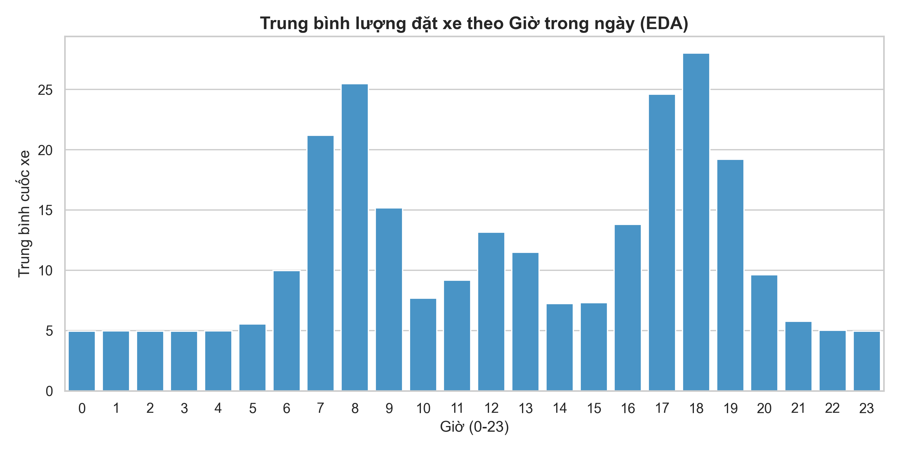
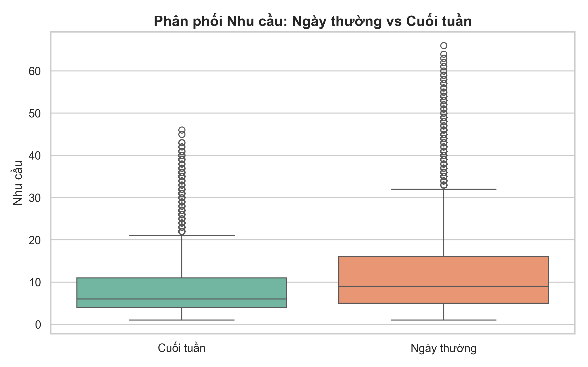
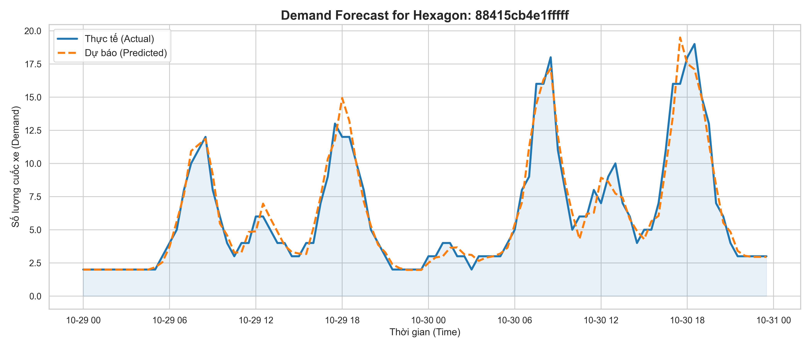

Tuyển dụng Data Team - Vinsmart Future
Mục tiêu: Xây dựng mô hình AI dự báo nhu cầu đặt xe (Demand) tại từng khu vực, từ đó làm cơ sở cho thuật toán điều phối xe (Supply) nhằm giảm thời gian chờ của khách và hạn chế tài xế chạy rỗng.
Phương pháp luận:
Sau khi giả lập thành công tập dữ liệu 30 ngày cho 61 khu vực lục giác trung tâm, chúng ta có cái nhìn tổng quan về hành vi gọi xe của khách hàng:
Dữ liệu bám rất sát thực tế với 2 đỉnh cao điểm rõ rệt: Khung giờ đi làm (8h sáng) và Khung giờ tan tầm (18h chiều).

Khối lượng đặt xe vào cuối tuần giảm nhẹ và có độ phân tán khác với ngày thường do nhu cầu đi lại làm việc giảm bớt.

Sử dụng thuật toán LightGBM để học các quy luật từ quá khứ. Các biến (Features) được đưa vào mô hình bao gồm: Giờ, Ngày trong tuần, và Nhu cầu trễ (Lag features của 30 phút trước, 1 tiếng trước, và cùng giờ ngày hôm trước).
Như hình dưới, đường đứt nét màu cam (AI Dự báo) bám gần như hoàn hảo theo đường nét liền màu xanh (Thực tế) trong mọi khung giờ của 2 ngày cuối cùng trong tập test.

Với độ chính xác dự báo cao từ Bước 3, hệ thống đã sẵn sàng để phát triển Giai đoạn Điều phối (Phase 3 & 4). Logic thiết kế như sau: